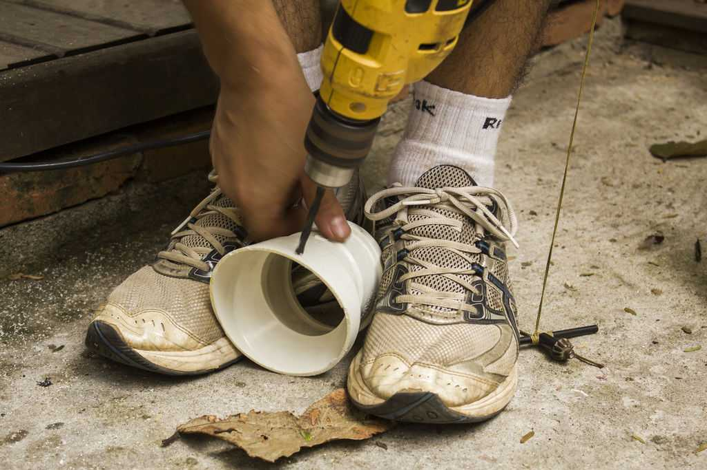
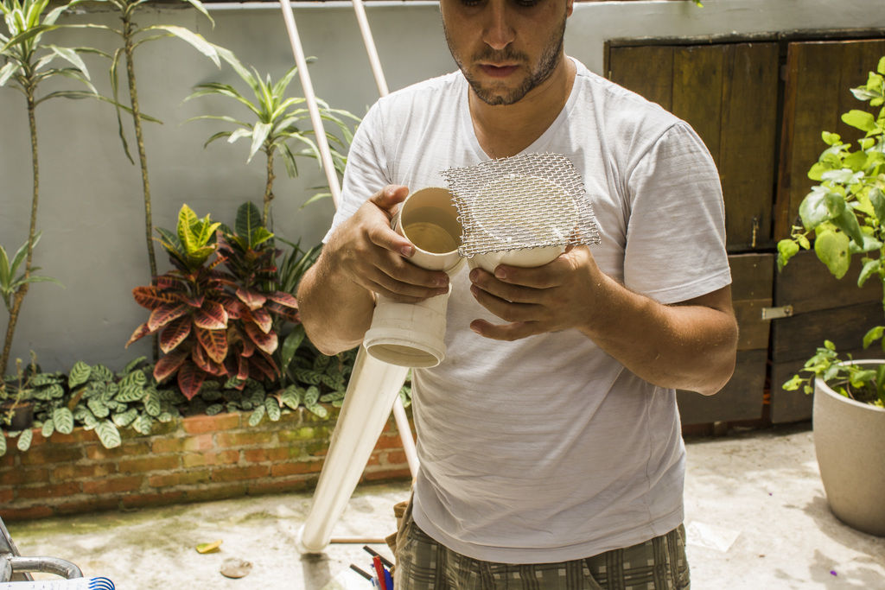
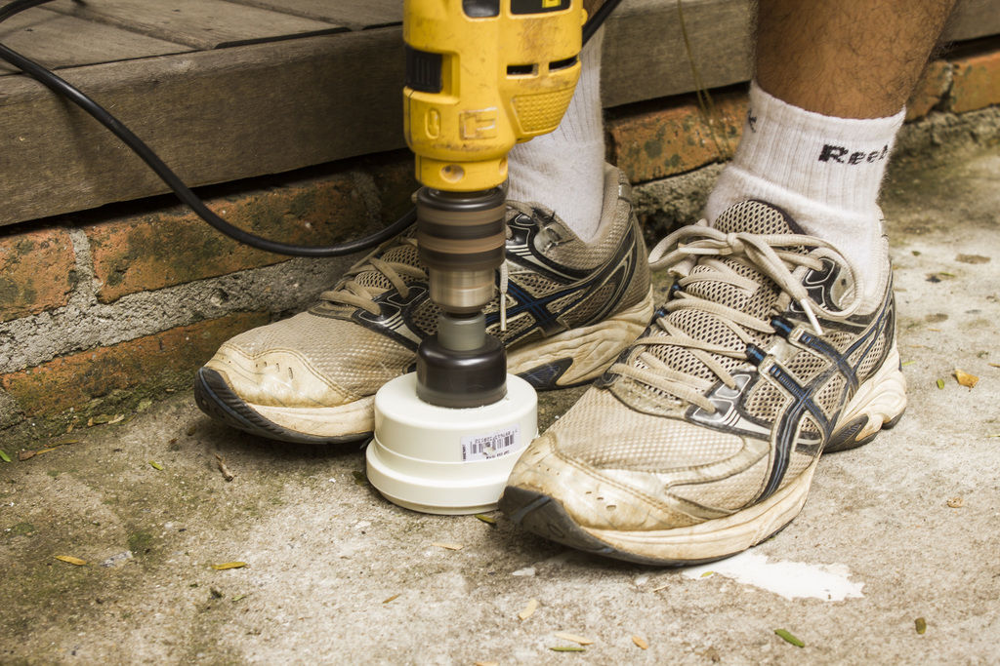
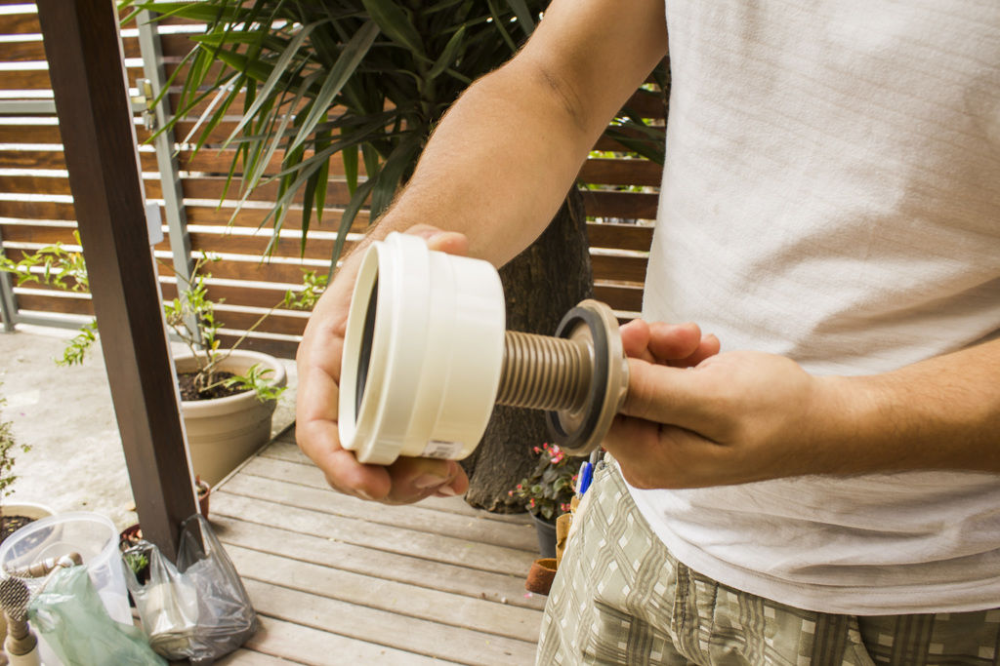
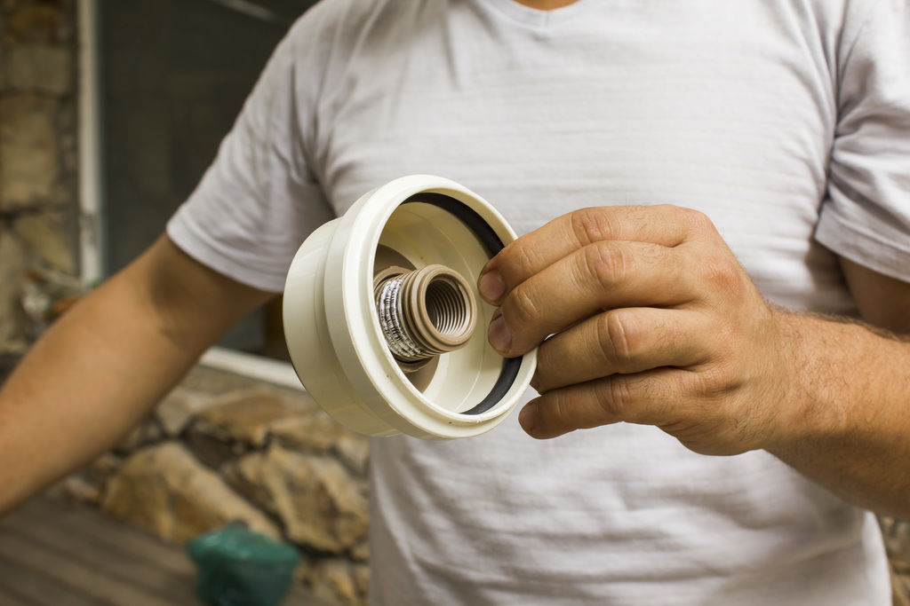
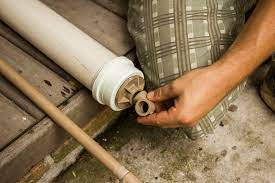
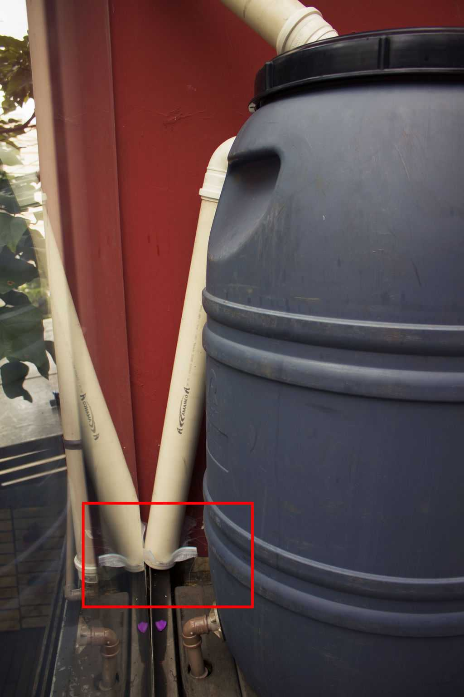

OBJETIVO:
Construir uma cisterna na escola para captar a água da chuva e reutiliza-la na limpeza geral do colégio, calçadas, vidros, paredes, banheiros, irrigar a horta e o jardim, evitando assim o desperdício da água tratada, diminuir o gasto com água no estabelecimento e ensinar os alunos desta instituição como reproduzir em suas próprias casas o experimento e, dessa forma, diminuindo o impacto nocivo em nossos recursos hídricos causado pelo consumo pouco consciente da água.Vem de uma cultura milenar a armazenagem da água da chuva em recipientes apropriados que recebem o nome de cisterna. A água da chuva é captada por calhas e dutos do telhado e/ou pisos enchendo a cisterna. Essa água pode ser usada para irrigar e lavar, recomenda-se para seu consumo, fazer um tratamento devido alguns poluentes que ela contém em função de seu contato com a atmosfera. O início da chuva arrasta a maioria dos poluentes e por isso deve-se criar um sistema que propicie a diminuição dos efeitos nocivos desses elementos (isso depende da área de captação e da poluição do ar local). É necessária também a instalação de um filtro de folhas, pouco antes da entrada da cisterna, para não entupir o sistema. As cisternas podem ser de alvenaria ou com material plástico modular. Para o bom funcionamento da cisterna recomenda-se que ela fique enterrada, para controlar a variação de temperatura em seu interior e manter a qualidade da água e dos materiais que a cisterna foi produzida. Porém, também podem ficar na superfície. Deve-se mantê-la sempre fechada, para que a luz do sol não penetre, evitando a proliferação de algas e outros micro- organismos. Deve ter estrutura resistente e impermeável, dutos de entrada de água em cima e de saída embaixo. Em cima também deve-se instalar um bem dimensionado ladrão direcionando a água para um sistema de infiltração no solo.
Teoricamente, qualquer casa, condomínio ou apartamento pode fazer uma cisterna para captar a água da chuva e reutilizá-la. Algumas cisternas mais robustas tem até sistema que trata a água captada da chuva para que ela possa ser usada para beber. As cisternas armazenam água da chuva para reuso em diversas situações, como limpeza de pisos e áreas externas, de carros, de jardins e nas descargas do vaso sanitário e essa é uma excelente opção para aprendermos a praticar o consumo consciente de água.
Teoricamente, qualquer casa, condomínio ou apartamento pode fazer uma cisterna para captar a água da chuva e reutilizá-la. Algumas cisternas mais robustas tem até sistemaO primeiro passo para aproveitar a água que escorre pela calha e armazená-la na sua cisterna residencial é limpar o telhado, principalmente no caminho até o reservatório, para evitar a contaminação da água que será utilizada pela sua família. Remova as folhas e as sujeiras mais grossas com a mão. Você também pode lavar as calhas com água, sabão e água sanitária para garantir uma limpeza mais profunda. Apesar dessa etapa não ser obrigatória, garante a melhor maioria das situações, usa-se bombonas (tonéis de plástico comuns no transporte de alimentos) - a capacidade de armazenamento é de 200 a 250 litros. A escolha geralmente varia dependendo do tamanho da casa. Também é possível usar uma caixa d’água maior ou interligar mais de um recipiente para aumentar a capacidade de armazenamento. Ao escolher a sua cisterna é preciso ter cuidado para não usar nenhum recipiente que já tenha transportado qualquer produto químico.
O local escolhido para colocar a cisterna também deve ser analisado. Além de colocá-la perto da queda d’água, também é importante colocar o reservatório em um lugar em que não bata muito sol, para não facilitar a proliferação de fungos e algas. Caso não seja possível colocar a cisterna na sombra, é importante que os cuidados com a manutenção da água sejam mais constantes. Outro aspecto a ser levado em consideração se for instalar a cisterna no alto é o peso que seu telhado ou laje aguentam - não se esqueça que uma caixa de mil litros cheia equivale a uma tonelada. Feito tudo isso, está na hora de botar a mão na massa e transformar a sua bombona em uma cisterna.
Essa é uma Mini-Cisterna:
A quantidade de canos e joelhos vai variar com a disposição que a sua cisterna vai ficar. Neste caso q será mostrado ela ficou no andar de cima e a torneira no andar de baixo, precisando fazer muito mais conexões que o usual.
O diâmetro das tubulações também é influenciado pela área de captação, no caso, usou-se tubulações de 75mm ou 3 polegadas.
Antes de comprar todo o material, faça um ensaio das posições dos canos, pois dessa forma evita-se que sejam colados de forma errada, desperdiçando-os.
A cisterna é composta por 3 partes: filtro de descarte inicial, reservatório e o ladrão, além do consumo.
Na sequência será detalhado parte por parte o que você precisa para montar cada um.
A primeira água da chuva vem cheia de resíduos do telhado, para evitar que ela entre e contamine a água armazenada, descarta-se por meio de um tubo pré-cisterna.
Para ter água limpa no reservatório, começa-se todo o sistema com um filtro que evitará que sujeira como folhas entrem.
Pra isso, corta-se o tubo em diagonal e faz-se dois furos para amarrar a tela com enforca gato.
Tubo cortado na diagonal
Furando nas laterais para colocar os enforca gato
Conecte esse pedaço a um T, pois precisa de uma saída para a área de descarte e outra para o reservatório. Sempre que encaixar um cano no outro, lixe primeiro e depois passe a cola apropriada.
Para saber qual o lado que fica pra cima do cano preste atenção na “bolsa” na hora de comprar. Essa bolsa é como se fosse um funil para o próximo cano. Isso faz com que a água não passe pelas emendas, evitando vazamentos.
Indica-se para o tamanho do tubo de descarte, 1L para cada m2 do telhado.
Encaixe a flange no buraco.
No final do cano de descarte faz um registro para poder escorrer essa água descartada. Faça um furo com “serra copos” na base que fecharia o cano.
Coloque o anel de vedação.
Passe óleo/vaselina para colocar o anel, ajuda bastante.
Encaixe um joelho na flange para que seu registro não fique torto.
E, por último, o registro.
Neste caso, foi feito um caminho maior para a água excedente poder ser descartada.
No final, ela fica assim:
Essa parte é simples, apenas conecta-se os canos com o fundo vazado para escorrer a água excedente do reservatório.
Coloque uma tela na ponta desse cano, para evitar a entrada de insetos – principalmente do mosquito da dengue – dentro do reservatório de água. Certifique-se de colocar na porção mais alta possível do reservatório, para aproveitar ao máximo o volume disponível.
Tela anti-intrusos
O cano que ficará dentro do reservatório deve formar um “U”, para diminuir a força da água que entrará. Esta sendo falado do final, na ponta inferior à direita.
Na base desse “U” faz um sifão, um pequeno furo para evitar que água fique acumulada.
Terminada a fase de lego com os canos, começa-se a fazer os furos no barril. Um para entrada d’água, outro para o ladrão e um para a torneira de consumo. Dica: Para medir os furos, utilize um resto de tubo e marque com uma caneta.
Usando o tubo como decalque para a marcação do furo com a caneta.
Nesse barril o fura copos não dava conta, então foi feito vários mini-furos ao longo da marcação com a caneta e depois tirado a rodela.
Furos terminados, encaixamos os respectivos canos.
Agora a cisterna está pronta! É só esperar a chuva cair